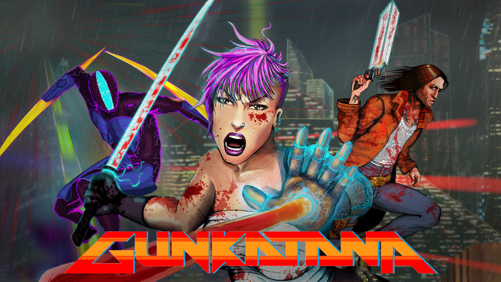
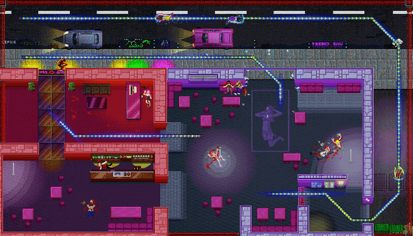
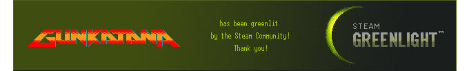
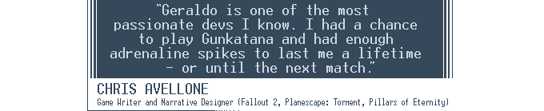

Gunkatana
2014 - 2016
Gunkatana is the award-winning turbo-fast action game, cracking top-down across speed rails, for PC, Mac and Linux.
A tight, hyperkinetic action game that's easy to play, but hard to master!
A neon-infused pixel art dream, made by me with CrazyArcadia and the Gunkatana team.

Download the demo at GameJolt and itch.io.

Made in Unity and C#.
Praise for Gunkatana

AWARDED GAME OF SHOW AT INTEL BUZZ WORKSHOP LONDON 2015
Interviews and Articles
Kotaku - 51 British Games to look out for in 2016
Killscreen - Gunkatana introduces a lightning fast bloodsport to cyberpunk
Siliconera - Gunkatana seeking Kickstarter funds for its one-hit kill combat
The Guardian - The best moments from GameCity 2015
Videogamer.PT - Interview (Portuguese)
Features
- Local Multiplayer up to four players
- An easy to learn, hard to master combat system
- Speed Rails - grind-kill your opponents in beautiful, almost poetic fashion
- 4 playable characters with strong motivations
- Retro inspired pixel art
- Gritty cyberpunk atmosphere
- A deep storyline chronicling the revolution against the megacorporations who control Absolution
- Retrowave soundtrack by Electric Cafe
- Sound design by Joonas Turner and Niilo Takalainen (Nuclear Throne, Broforce)
Events
- London Games Week 2016
- #demoscreen 2016
- GameCity 2015
- GameCity 2014
- Interface 2015
- ...and a multitude of appearances at the London GameSpace
Mirrorball Slots
2012 - 2015
Mirrorball Slots is a social casino F2P game for Facebook, iOS and Android.
At Plumbee I developed new slot machine games and made dynamic minigames and special effects, working directly with a very talented art team.
I was responsible for deployment of new builds of Facebook games and submission of new mobile versions to Apple, Google and Amazon.
Developing Mirrorball Slots, I followed Agile and continuous integration development practices.
I developed and maintained MBS's Adobe Native Extensions in Objective-C and Java. These add native functionality to mobile apps built using Flash and Adobe AIR.
I contributed my opinions regarding the game design and user experience of Mirrorball Slots, resulting in direct changes to the game.
Talk: Across the Pond
2014
I gave this talk detailing my journey from my home country of Portugal to London, following my passion for game development and all the lessons I've been learning, to an audience of game enthusiasts and indie game developers at an event hosted at the London GameSpace.
More Talks
Unity for Software Engineers - An indepth look at the Unity game engine from a software engineering perspective and how to adapt your workflow. Slides
Facebook London Mobile Forum - I represented Plumbee at the first Facebook hosted Mobile Forum and I spoke about Crossplatform Development. Slides
Introduction to Unity - I gave this talk introducing Unity to other Plumbee engineers to kickstart a discussion on game technology. Slides
Pocket Bogart
2010
Pocket Bogart is a noir visual novel.
When me and my friend Louis Lopes realized there aren’t too many film-noir themed games, we decided to do one ourselves.
We created the Pocket Bogart demo for the Nintendo DS, developed with the devkitPro toolchain. Louis wrote most of the script while I implemented the demo and designed the UI.
Pocket Bogart features a fully working dialog system:
- loads conversations from files
- displays a conversation between different speakers, with portraits
- waits for the user to touch or press a button to move to the next line of dialogue
- fast-forward the current line of dialogue until the end by holding down a button or touch-holding with the stylus
- plays sounds embedded in the dialogue
I've ported Pocket Bogart to Objective-C, Flash and Unity.
Flashlight
2009
Flashlight is a platformer I developed with three colleagues for our Interactive Games course of our Master’s Degree in Interaction & Knowledge at FCUL.
It's a multiplayer shooter where all is dark except for where you shine the light. In the darkness, you can tell where other players are as the onomatopoeias for the sounds they're making appear on their location.
Here’s a video we created for an Expo showcasing the cool projects students can do at FCUL University.
Ian Mallett‘s occlusion algorithm was used to implement the darkness.
Made in Python with PyGame.
Articles
I've written articles and interviewed game designers on the topics of inspiration, narrative and making a living through games.
- Interview with Chris Avellone
- Interview with Annie V. Mitsoda
- Dragon Age 2 analysis - included in Critical Distance's critical compilation of BioWare's Dragon Age 2
- In the absence of game industry featured on Gamasutra
Open Source Code
- Unity Tips - Tips, tricks and knowledge I've accumulated over the years
- C++ Sandbox - Computer Science algorithms